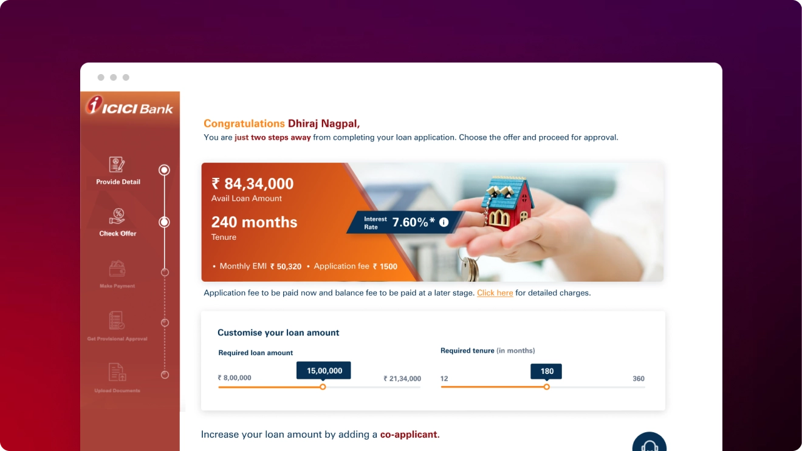

Revamping ICICI Express Home Loans for a Faster, More Intuitive Customer Experience
ICICI Bank is one of India's leading private sector banks, offering a comprehensive range of financial products and services through multiple digital and physical touchpoints. As customer expectations continue to evolve, ICICI Bank initiated the redesign of its Express Home Loan (EHL) website to create a more intuitive, accessible, and future-ready experience for prospective homebuyers.

Executive Overview & Context
ICICI Bank is one of India's leading private sector banks, offering a comprehensive range of financial products and services through multiple digital and physical touchpoints. As customer expectations continue to evolve, ICICI Bank initiated the redesign of its Express Home Loan (EHL) website to create a more intuitive, accessible, and future-ready experience for prospective homebuyers.
The Challenges
Despite having a strong digital presence, the existing Express Home Loan experience presented several usability and accessibility challenges that made it difficult for users to:
Understand loan offerings, interest calculations, and processing fee structures quickly.
Navigate complex, dense information structures filled with regulatory clauses and paperwork.
Complete key application actions and document submissions efficiently without abandonment.
Access important financial calculator tools and sanction statuses smoothly on smaller screens.
Strategic Objectives
- Create a seamless and intuitive user journey across web and mobile
- Ensure the experience is inclusive and easy to use for all customer age groups
- Reduce cognitive load and make essential content effortlessly discoverable
- Build a scalable experience aligned with evolving modern digital banking standards
The Solution
- Reduce friction throughout the end-to-end customer loan journey
- Present complex financial terms in a clear, structured, and visually digestible manner
- Improve discoverability of pre-sanction letters and eligibility estimation tools
- Deliver a unified, seamless responsive experience across desktop and mobile devices
- Strengthen customer confidence through clarity, security indicators, and design consistency
Process Steps Followed
A disciplined 5-stage human-centered design approach crafted to modernize critical banking infrastructure while preserving banking trust and compliance.
- Business Analysis
- User Research
- Competitive Benchmarking
- Design Audit
- Org. Structure
- Product Analysis
- Problem Definitions
- UX Strategy Road Map
- Information Architecture
- User Flow / Journey Mapping
- Wireframing
- Visual Design
- Style Guide & Design System
- Supportive Visual Assets
- Internal Feedback & Iteration
- Usability Testing
- Refinements
- Front End Engineering
- Final QC Post Code Integration
Key Highlights & Impact Metrics
- Modernised the ICICI Express Home experience with a cleaner, faster, and more intuitive interface.
- Simplified complex home-loan journeys by improving information hierarchy, navigation, and content clarity.
- Reduced cognitive load by breaking complex financial information into simpler, digestible sections.
- Created responsive, conversion-focused interfaces that balance ICICI's financial credibility with a more contemporary digital experience.
RI Journey (End-to-End Application Experience)
A step-by-step reimagination of the Express Home Loan web journey, guiding applicants through instant eligibility checks, customized loan terms, automated DigiLocker document verification, and real-time sanction letter generation.


Smart Steps
Chunking lengthy application forms into smart micro-steps with inline validation, immediate feedback, and transparent progress indicators.


High-Fidelity Interface Showcase
Mobile Application: EHL. Now in Your Pocket.
While the web platform enables deep analysis and decision-making, the mobile app is designed for speed, accessibility, and on-the-go loan application completion. Users can track documentation, speak to dedicated mortgage relationship managers, and monitor disbursements from anywhere.

"Home loans are one of the most emotional and high-stakes financial journeys of a person's life. By replacing bureaucratic banking friction with transparent digital steps, we transformed a stressful paperwork ordeal into an empowering, 8-minute journey."